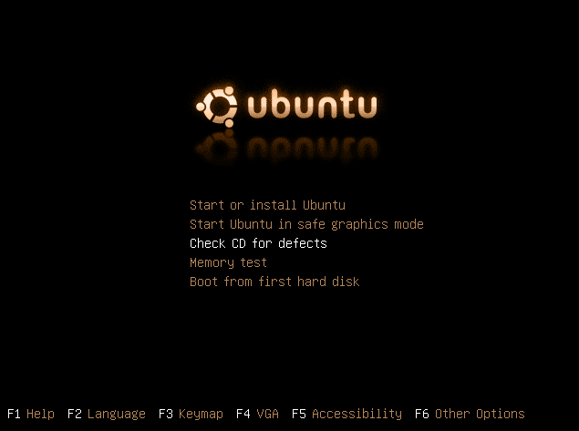
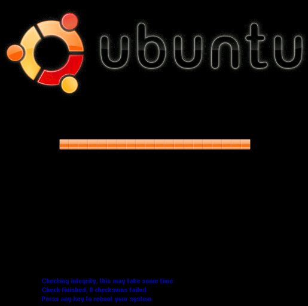

Проверка целостности дистрибутива Lubuntu Linux Live USB(CD/DVD) после записи на USB(CD/DVD)
На этой странице описано, как проверить свой носитель с обазом Lubuntu Linux Live USB(CD/DVD) и убедиться, что он был записан без ошибок. Если вы следовали указаниям предыдущих записей, все должно быть правильно. Однако иногда носители, которые мы используем, могут быть неисправны, или данные при записи могут быть преднамеренно изменены злоумышленниками чтобы скомпроментировать Lubuntu Linux Live USB(CD/DVD) для получения доступа к важным данным. Чтобы устранить все возможности ошибок, эта проверка позволит убедиться, что каждый файл на записанном носителе верный.
Проверка целостности Lubuntu Linux Live USB(CD/DVD).
1.Вставьте носитель с Lubuntu Linux Live USB(CD/DVD) в компьютер, на котором вы хотите запустить ОС.
2. Настройте компьютер для загрузки с USB(CD/DVD)
3.Включите или перезагрузите компьютер.
4. В меню Lubuntu Linux Live USB(CD/DVD) выберите «Check CD for Defects»
.
5.Дождитесь завершения этого процесса, и сообщения о результатах проверки файлов.
.
Для Lubuntu Linux Live USB(CD/DVD) картинуи будут отличаться, но пункты меню такие же. Нас интересует результат проверки должно быть - "Chek finished, 0 cheksum failed" или "Chek finished, no errors found"
Особенности проверки целостности Lubuntu Linux Live USB.
Здесь вы можете найти md5sum Lubuntu iso. Вышеуказанное значение md5 является контрольной суммой всего диска, а не отдельных файлов. Когда вы готовите загрузочный USB, файлы из iso копируются на USB-носитель, а загрузочный запись USB перезаписывается, что делает его загрузочным. В результате мы видим что, один файл (например, lubuntu-18.04.1-desktop-amd64.iso) с суммой md5 (7b0a543da70aafe476796f536842d408) теперь не существует, и вместо этого на USB присутствует несколько файлов. Таким образом, у вас нет iso файла на USB, чтобы сравнить исходную сумму md5 lubuntu iso. Если вы хотите проверить целостность каждого из файлов отдельно, вам необходимо загрузить с USB-устройства, а затем выбрать «Check CD for Defects» из меню загрузки. В каждом lubuntu iso есть файл ms5sum.txt, который содержит md5sum каждого отдельного файла в iso. Параметр «Check CD for Defects» проверяет md5sum каждого файла с помощью списка md5, присутствующего в iso. Тоже можно сделать уже из самой Lubuntu Linux Live USB просто перейдите в USB диск в Lubuntu и запустите md5sum -c md5sum.txt это выполнит проверку целостности отдельных файлов и при усешном завершении проверки подтвердит целостность системы.
Открываем командную строку:
- df - отобразит список устройств;
- cd /cdrom - переходим на диск;
- ls - список файлов на диске;
- md5sum -c md5sum.txt - проверяем целостность файлов системы, займет время, везде должно быть ОК.
<
Защитите вашу конфиденциальность при использовании криптовалют.
Защитите Ваши интернет платежи с помощью Linux Live CD(USB).
Создание Lubuntu Linux Live CD в Windows.
Создание Lubuntu Linux Live USB в Windows.
Проверка целостности дистрибутива Lubuntu Linux Live USB(CD/DVD) в Windows.
Проверка целостности дистрибутива Lubuntu Linux Live USB(CD/DVD) после записи на USB(CD/DVD).
|
|

Home Nagrania Projects |


|